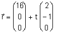
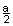
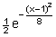
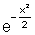
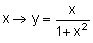
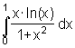
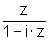
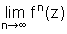

| KANTONSSCHULE REUSSBÜHL | Maturitätsprüfungen 1996 (Be / Sw) |
M a t h e m a t i k Typus C
Bemerkungen: Jede Aufgabe soll auf einer neuen Seite begonnen werden.
Zeit: Drei Stunden.
Für 40 Punkte wird die Note 6 erteilt.
Hilfsmittel: DMK Formeln und Tafeln, Taschenrechner TI-82 bzw. TI-85(graphikfähig).
1. Durch ka: (x + y)4 = a · x3 ist eine Kurvenschar durch den Ursprung mit dem Scharparameter a > 0 gegeben [Schooten-Kurve, nach Frans van Schooten (1615-1660), bearbeitet durch Christian Huygens (1629-1695)].
a) Notiere die zur Kurve ka gehörenden reellen Funktionen y1 = f1(x) und y2 = f2(x) und bestimme von diesen Funktionen Definitionsbereich, Nullstellen, Hochpunkt H und Kurventangenten im Ursprung in Abhängigkeit von a.
b) Setze nun a: = 4. Die vertikale Gerade x = t schneidet die Kurve k4 in den beiden Punkten T1 und T2. Zeige, dass sich die beiden Kurventangenten t1 und t2 durch T1 und T2 immer auf der Winkelhalbierenden des II. und IV. Quadranten schneiden; bestimme die Koordinaten des Schnittpunktes S der beiden Tangenten.
c) Zeichne die algebraische Kurve ka für a = 4 mit den Tangenten durch die Punkte T1 und T2 ≠ T1, wenn die Abszisse dieser Punkte gleich einer Nullstelle von k4 ist.
d) Bestimme den Inhalt der von der Kurve ka und der vertikalen Geraden durch die positive Nullstelle eingeschlossenen Fläche in Abhängigkeit von a.
2. Gegeben sind der Punkt P(12/1/1) sowie die zwei Geraden g:  und m: Parallele zur z-Achse durch den Punkt (1/0/0).
a) P und g bestimmen eine Ebene E. Gib ihre Koordinatengleichung an.
b) E soll Tangentialebene einer Kugel k mit Radius 3 sein, deren Mittelpunkt M auf der Geraden m liegt und minimale z-Koordinate hat. Wie heisst die Gleichung von k?
c) Bestimme die Gleichung derjenigen Kugeltangente h an k, die in E liegt und die z-Achse schneidet.
Wie gross ist der Winkel zwischen den beiden Geraden g und h?d) Wie lautet die Gleichung derjenigen andern Tangentialebene Delta an k, die die Gerade g enthält?
3. In einem Wettermodell gibt es Regentage (R-Tage) , bewölkte Tage (B-Tage) und
Sonnentage (S-Tage). Die Wahrscheinlichkeit, dass auf einen R-Tag ein B-Tag folgt (oder
umgekehrt), sei a. Die Wahrscheinlichkeit, dass auf einen B-Tag ein S-Tag folgt (oder
umgekehrt), sei ebenfalls a. Die Wahrscheinlichkeit, dass auf einen R-Tag ein S-Tag folgt
(oder umgekehrt), sei .
Nach einem Regentag wird die Periode der n darauffolgenden Tage betrachtet.
a) Wie gross sind die Wahrscheinlichkeiten der drei Ereignisse
a1) auf einen R-Tag folgt ein R-Tag?
a2) auf einen S-Tag folgt ein S-Tag?
a3) auf einen B-Tag folgt ein B-Tag?Leite daraus eine Bedingung für a ab.
b) Sei a = 0.2. Wie lange muss die Periode n mindestens sein, damit mit Wahrscheinlichkeit kleiner als 10% lauter Regentage auftreten?
c) Berechne in Abhängigkeit von n und a die W'keit, dass jeder der n Tage ein Sonnentag ist. Wie gross muss a (in Abhängigkeit von n) gewählt werden, damit diese W'keit maximal ist?
d) Sei nun n = 2. Die Zufallsvariable X sei die Anzahl der Sonnentage in dieser Periode.
Berechne für allgemeines a den Erwartungswert E(X).
Für welches a wird E(X) maximal?
4. Löse die beiden unabhängigen Teilaufgaben.
a) Gegeben ist die Affinität f mit den Gleichungen f: x' = ax + b, y' = cy sowie die Kurve mit Gleichung y = g(x) = .
Bestimme zuerst die reellen Parameter a>0, b und c derart, dass der Graph von g unter der Affinität f auf die Kurve mit Gleichung y =  abgebildet wird. Gib nun die Abbildungsdeterminante von f an, entscheide, ob f eine perspektive Affinität ist und ob f Fixgeraden besitzt.
b) Die Funktion mit Gleichung f:  lässt sich für gewisse x-Werte als Grenzwert einer geometrischen Reihe mit dem Anfangsglied x und dem Quotienten q = - x2 auffassen. Bricht man die geometrische Reihe nach n Gliedern ab, so stellt die berechnete Summe Pn(x) eine Approximation für die Funktion f dar.
Bestimme durch Integration von P4(x) ⋅ ln(x) eine Näherung für das uneigentliche Integral .
5. Gegeben ist die komplexe Funktion z → w = f(z) =  .
a) Bestimme alle Fixpunkte dieser Abbildung.
b) Bilde den Einheitskreis und die relle Achse mit f ab.
c) Es sei f1(z) = f(z), f2(z) = f(f(z)) und fn+1(z) = f(fn(z)) die Verkettung(en) der Funktion f mit sich selbst.
Berechne fn(z) für n = 2, 3 und 4; stelle eine Vermutung für beliebiges n auf und beweise diese mit vollständiger Induktion.d) Bestimme für beliebiges z den Grenzwert  .